ISO 4001/500f/8
Eje central
Seguridad y prevención
- Preparación previa a la jornada
- Evaluación de riesgos en terreno
- Desplazamiento seguro entre multitudes
- Protección personal y del equipo
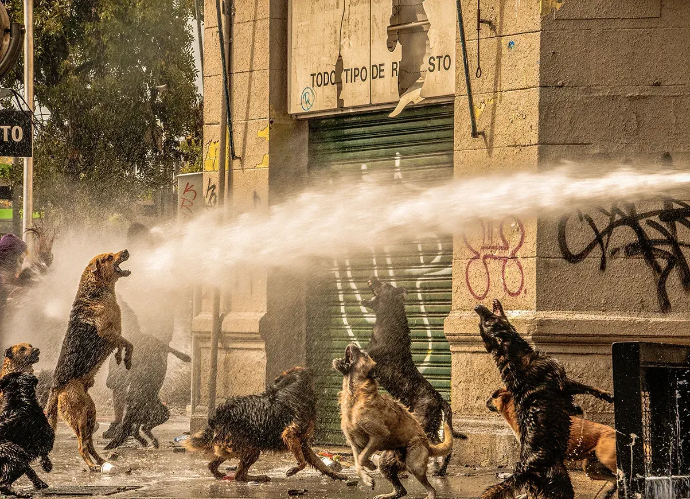
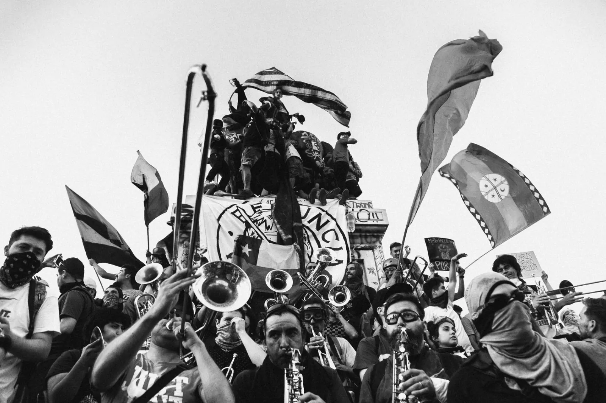
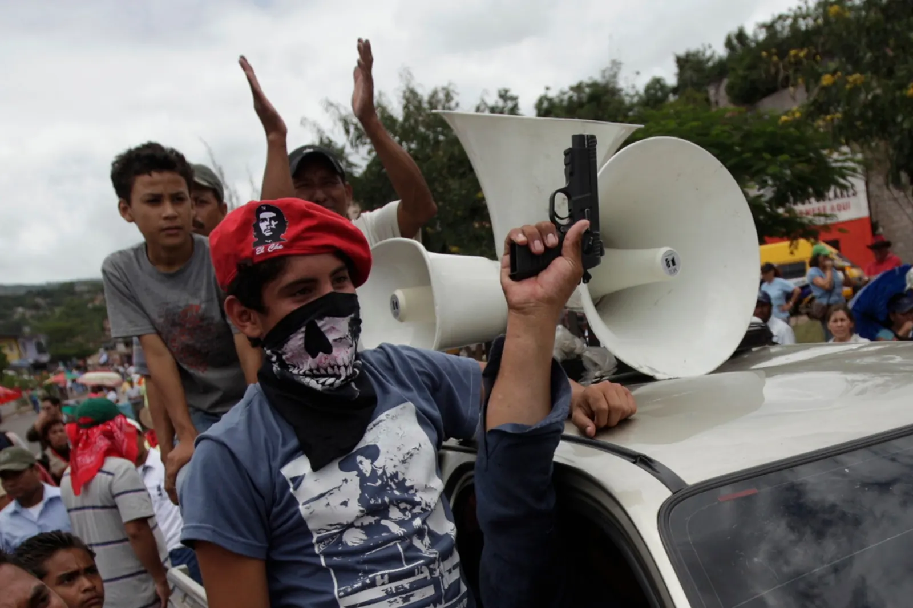
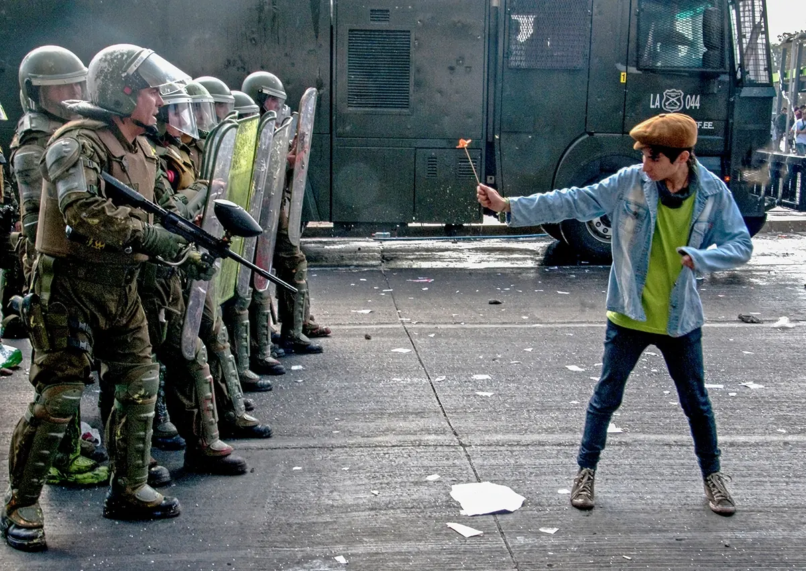
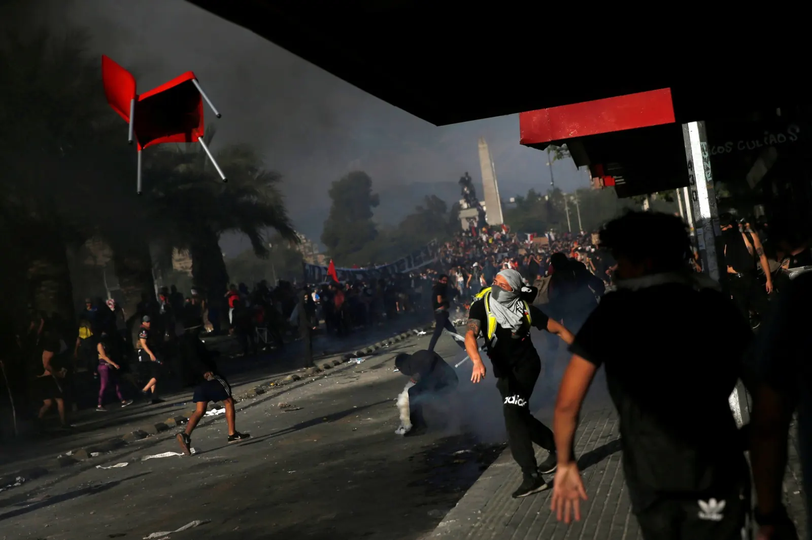
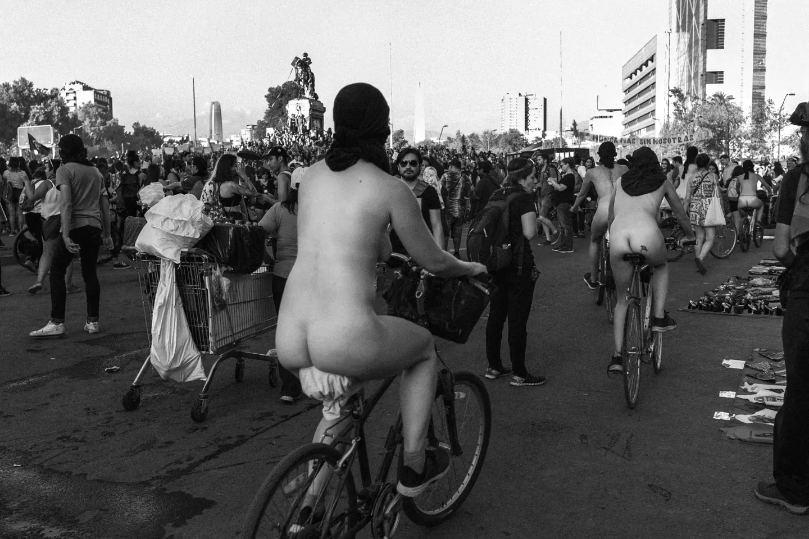
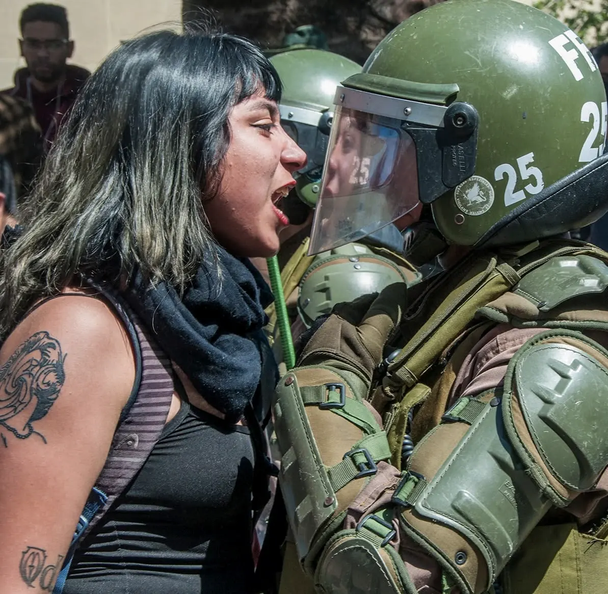
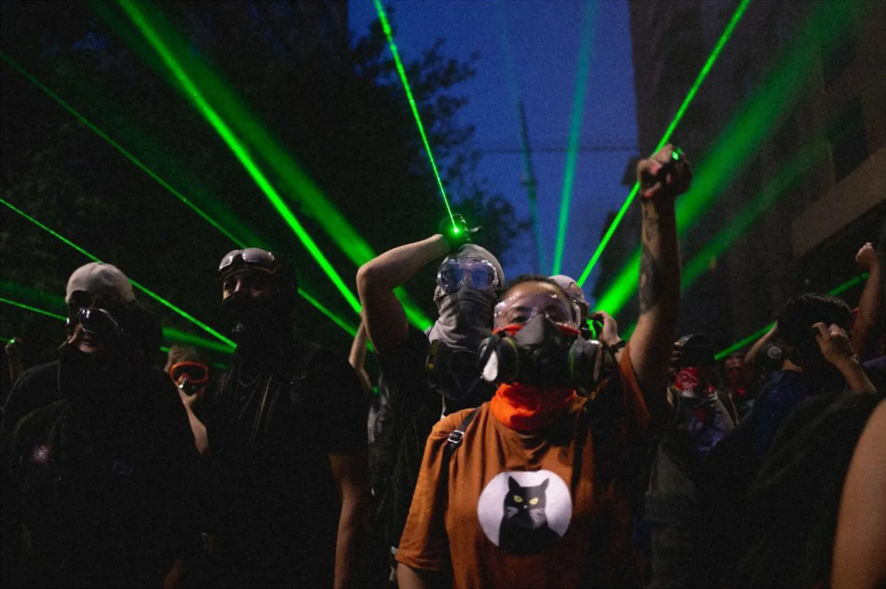
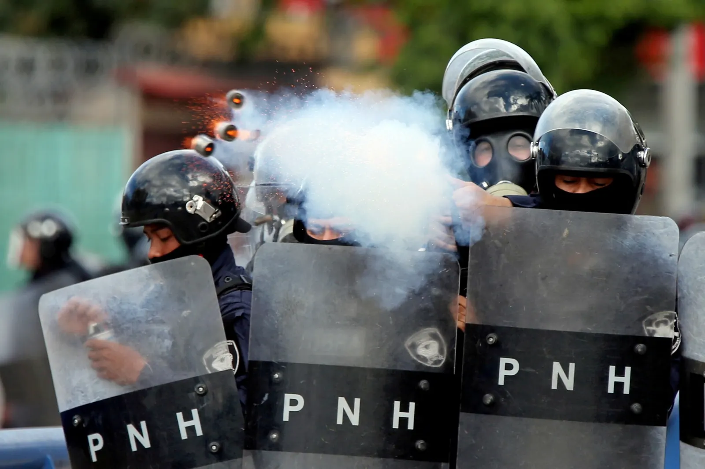
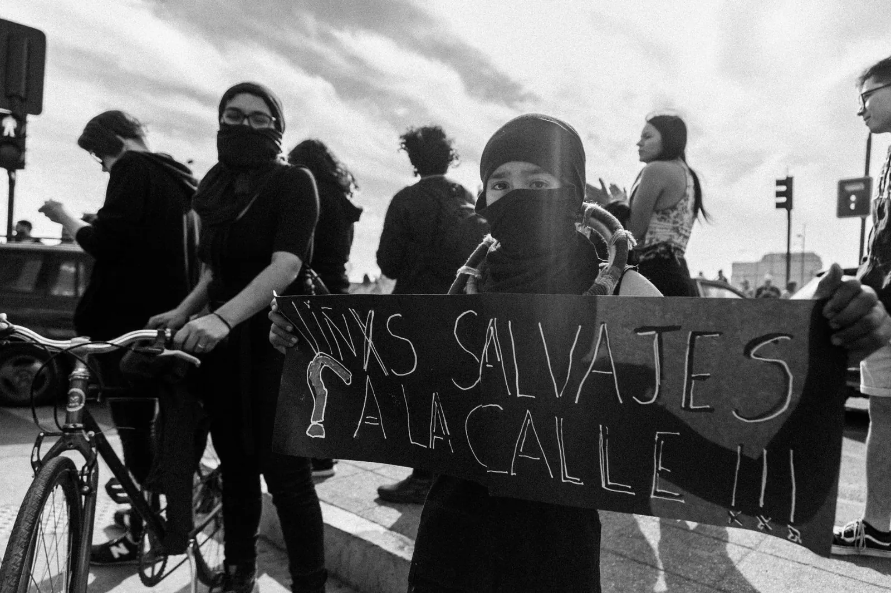
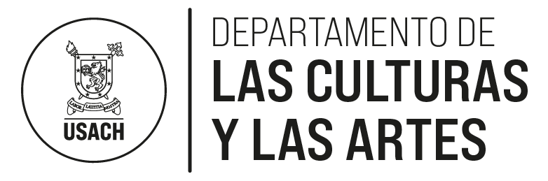
Para personas que están empezando en fotografía y quieren aprender a documentar marchas, manifestaciones y movilizaciones sociales. Vemos técnica, relato y ética, con énfasis en la seguridad y la prevención al trabajar entre multitudes y en situaciones impredecibles.
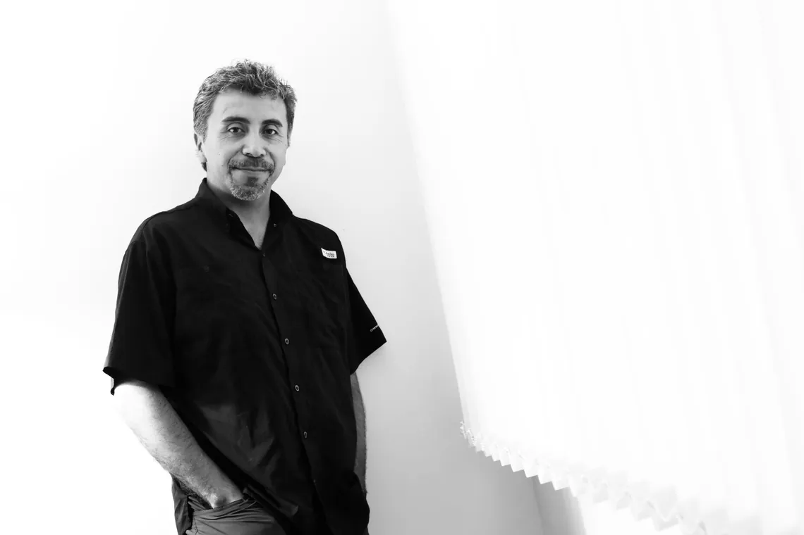
▸ 06Fotoperiodista · Premio Pulitzer 2019
Fotoperiodista chileno nacido en Puerto Montt y primer chileno en ganar el Premio Pulitzer (2019, Breaking News), con el equipo de Reuters, por la cobertura de la migración centroamericana a Estados Unidos. Trabajó 17 años para Reuters como corresponsal en Chile, Cuba, Honduras y México, y la agencia lo eligió en dos ocasiones Fotógrafo del Año en América Latina. Expuso de forma individual en Visa pour l'Image, en Francia.
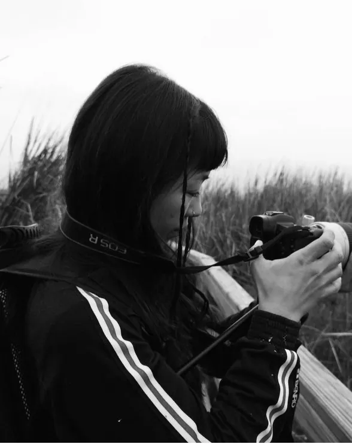
▸ 06AFotografía documental y de autor
Fotógrafa chilena formada en la Escuela de Fotografía ARCOS. Desde la fotografía documental, el registro cultural y los proyectos comunitarios, explora la memoria, el territorio y la vida cotidiana. Su obra se ha exhibido en el Festival de la Luz y en Ficha Fest.
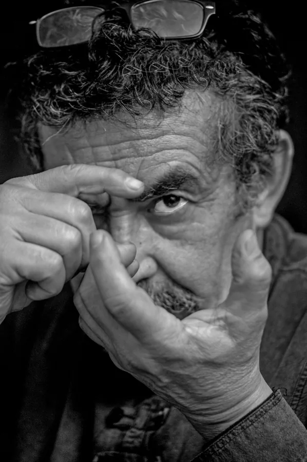
▸ 07Cunco, La Araucanía · más de seis décadas de oficio
Fotógrafo de Cunco, La Araucanía, con más de seis décadas de trayectoria en prensa, retrato y obra de autor sobre memoria, territorio e identidad. Premio a la Trayectoria Creativa La Araucanía 2023; parte de su obra está en la Biblioteca de la Universidad de Stanford y en museos de Chiloé y La Araucanía. En 2026 publica «Poética de lo cotidiano».
 ▸ 07A
▸ 07AFotoperiodismo y documental
Fotoperiodista y realizadora audiovisual radicada en Santiago. Cubre conflictos de América Latina para medios internacionales y trabaja en cine independiente. Premiada por el Salón de Reporteros Gráficos y Camarógrafos de Chile y con el premio Rodrigo Rojas de Negri al talento joven. En 2025 publicó el fotolibro «Terricidio».
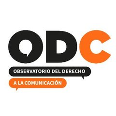
Participa también
Organización sin fines de lucro que promueve y defiende la libertad de expresión y el pluralismo, con especial atención a la protección de periodistas, comunicadoras y comunicadores, y fotógrafas y fotógrafos. Documenta restricciones a la prensa y entrega asesoría legal a quienes son detenidos o agredidos mientras informan.
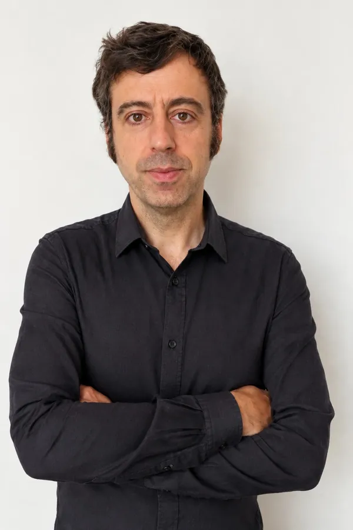
Doctor en Derecho y especialista en libertad de expresión y derecho a la información. Preside el ODC.
La inscripción es gratuita y se hace a través de PortalDisc, el sistema del Departamento de las Culturas y las Artes de la USACH. Inscríbete si vas a asistir presencialmente a la Sala de Cine Gladys Pinto Celedón.
Para seguir el workshop por streaming no necesitas inscribirte.
Sala de Cine Gladys Pinto Celedón
Universidad de Santiago de Chile (USACH)
Av. Libertador Bernardo O'Higgins 3363, Estación Central. Metro Universidad de Santiago, Línea 1.
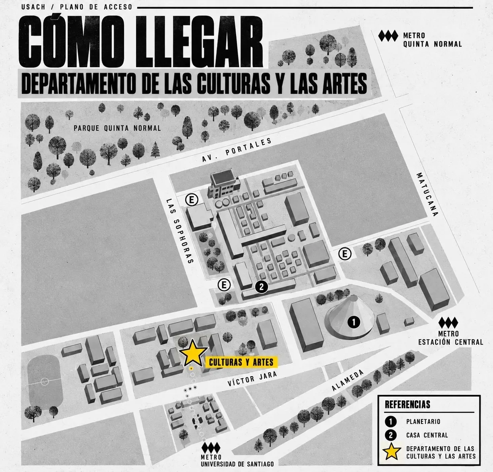
Si no puedes venir a la sala, sigue el workshop en vivo desde donde estés. La transmisión es gratuita y abierta a todo público.
La grabación quedará disponible después en plataformas de libre acceso, para verla cuando quieras.
Plataforma y enlace por anunciar